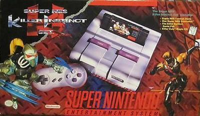
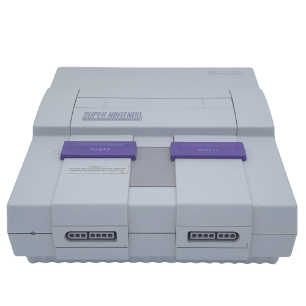
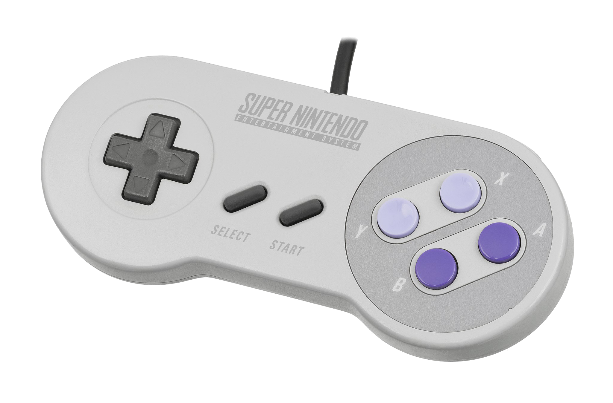

The complete Super NES system with Killer Instinct and Killer Cuts music CD. For $99.95. That's a killer deal.
The Super NES Control Deck
The Super NES Control Deck features custom 16-bit technology that allows for over 32,000 dazzling colors, high resolution graphics and exciting eight channel stereo sound. Big characters. Smooth animation. Graphics that scroll or rotate in every direction.

The Super NES Controller
The high-tech design and function of the Super NES Controller provides amazing play control. It's shaped to fit your hand comfortably. Eight control buttons plus the standard cross-key allow greater game play options!

NOW YOU'RE PLAYING WITH POWER. SUPER POWER.
Super NES Technical Specifications
| Super NES Technical Specifications Chart | |
|---|---|
| Central Processing Unit (CPU) | 16-bit (main 'brain' of the system) |
| Work RAM for CPU | 128 Kilobytes (CPU temp. storage) |
| Picture Processing Unit (PPU) | 16-bit (generates all of the graphics) |
| Picture Processing Unit (PPU) | 16-bit (generates all of the graphics) |
| Video RAM for PPU | 64 Kilobytes (temp. storage for the PPU) |
| Maximum Colors on One Screen | 256 |
| Total # of Colors Available | 32,768 |
| Maximum Screen Resolution | 512 pixels X 448 pixels |
| Maximum # of Sprites per Screen | 128 |
| Maximum # of Sprites per Line | 32 |
| Maximum Sprite Size | 64 pixels X 64 pixels |
| Minimum Sprite Size | 8 pixels X 8 pixels |
| Scrolling | Horizontal, Vertical, Diagonal |
| Audio Processing Unit (APU) | 8-bit (main sound processor) producing 16-bit sound |
| Pulse Code Modulator (PCM) | 16-bit (converts digital information from the game pak into sound) |
| Number of Sound Channels | 8 |
| Clock Speed | 3.58, 2.68, and 1.79 Mhz |
| Software RAM | YES |
| AC Adapter: | |
| Super NES Input | 120 Volts AC, 60 Hertz, 17 Watts |
| Super NES Output | 10 Volts DC, 850 mA |